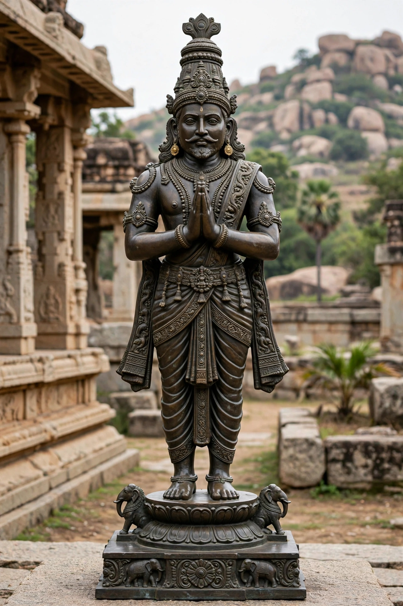

| Krishnadevaraya | |
|---|---|
| Reign | 1509 – 1529 |
| Empire | Vijayanagara Empire |
| Dynasty | Tuluva |
| Capital | Vijayanagara (Hampi) |

Krishnadevaraya (17 January 1471 – 17 October 1529) was the greatest emperor of the Vijayanagara Empire of South India, reigning from 1509 to 1529. Under him the empire reached its zenith of power and prosperity, dominating the Deccan and the eastern coast, while his court became a celebrated centre of Telugu, Kannada, Tamil and Sanskrit literature.
Krishnadevaraya came to the throne after his half-brother Vira Narasimha, guided by the able minister Timmarusu (Saluva Timma). He defeated the Bahmani Sultanate and its successor states, most famously at the Battle of Raichur in 1520 against Ismail Adil Shah of Bijapur, and conquered the Gajapati kingdom of Odisha, marrying a Gajapati princess and returning a captured Balabhadra image. He maintained friendly relations with the Portuguese at Goa, importing horses and allowing Albuquerque's envoys at court. His armies kept pressure on Bijapur and Golconda while internal administration — irrigation works, tax reform and temple endowments — strengthened the empire's heartland.
The emperor was himself a scholar-poet, author of the Telugu masterpiece Amuktamalyada, a poem on the life of the saint Andal that also contains advice on kingship. His court hosted the Ashtadiggajas, the "eight elephants" of Telugu poetry, including Allasani Peddana, honoured as the grandfather of Telugu poetry, and the wit Tenali Ramakrishna. He built extensively at Vijayanagara — the Vittala and Hazara Rama temples and great gopurams at temples across the south, including Tirupati.
Krishnadevaraya fell ill and died in 1529 after designating his half-brother Achyuta Deva Raya as successor; the succession disputes that followed weakened the empire a generation before its defeat at Talikota in 1565.
See also: Hampi · Battle of Talikota